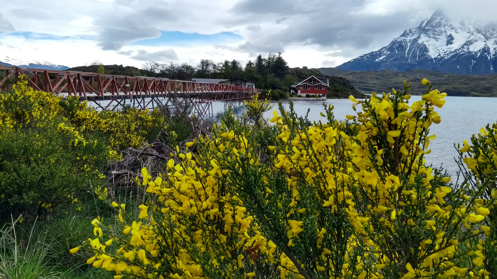

L'ARGENTINE
L'Argentine est un joyau d'Amérique du Sud qui séduit par sa diversité époustouflante. Des sommets majestueux des Andes aux plages dorées de la côte atlantique, en passant par les cascades spectaculaires d'Iguazu, chaque coin du pays émerveille les voyageurs. Mais l'Argentine ne se limite pas à ses paysages à couper le souffle. C'est aussi une mosaïque culturelle fascinante, mêlant des influences autochtones, européennes et africaines.

CÔTÉ HISTOIRE
L'Argentine a obtenu son indépendance en 1816 après la colonisation espagnole. Son histoire est marquée par des périodes de conflits internes, des gouvernements militaires, et le péronisme. Dans les années 1970, une dictature militaire brutale a sévi. Depuis les années 1980, le pays a connu des cycles de stabilité et de crises économiques, mais demeure une puissance régionale en Amérique du Sud.
